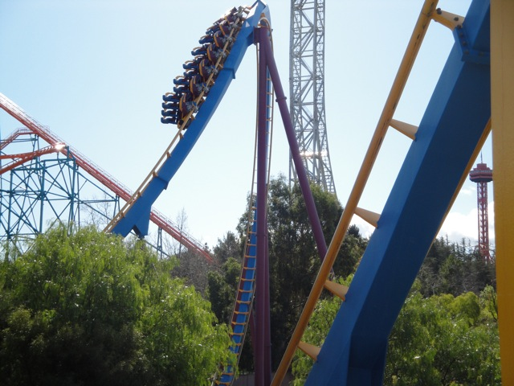
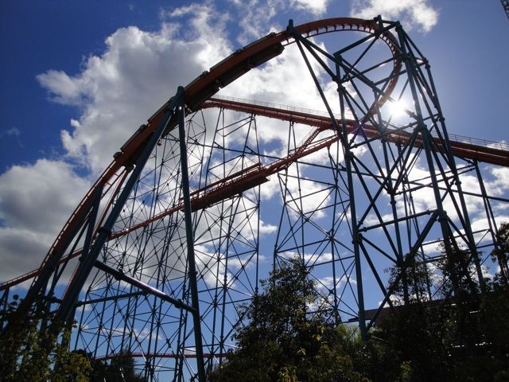
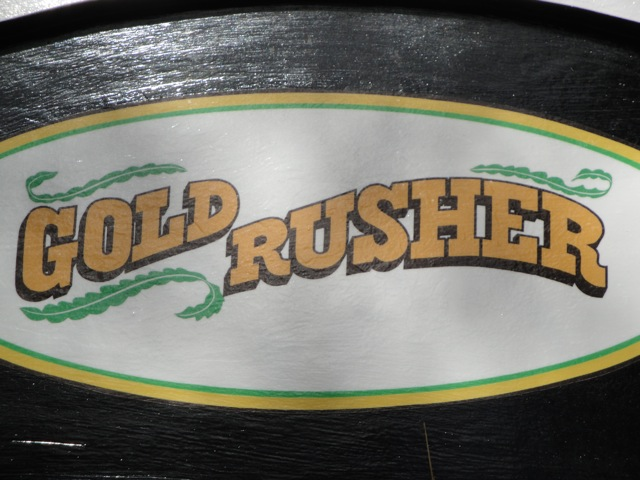
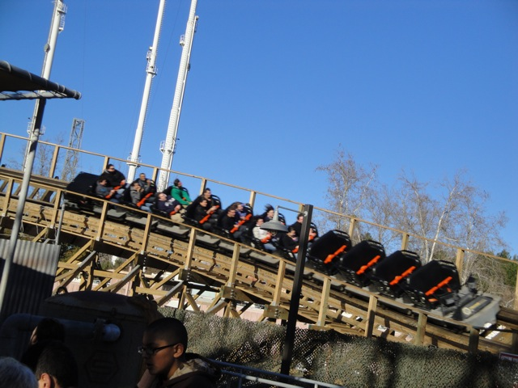
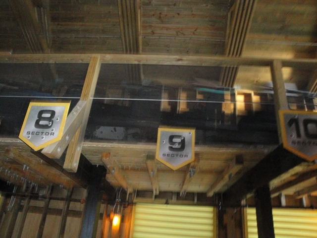

Superbowl SFMM 2010
Well since we at Incrediblecoasters don't give a damn about football, We decided to head on out to Six Flags Magic Mountain assuming it would be empty due to everybody watching the Superbowl.
 First ride of the day would indeed be Scream.
First ride of the day would indeed be Scream.
 You know, I feel like having a Scream Marathon. It may not be the greatest ride ever, but it's empty. Let's go off and ride Scream multiple times.
You know, I feel like having a Scream Marathon. It may not be the greatest ride ever, but it's empty. Let's go off and ride Scream multiple times.

Scream was running quite well today.
Yeah. Those are the crowds we like to see.
Read the caption above.
 I really wished they got rid of these Morgan Trains on Collosus. They arn't that comfortable and tend to automatically staple you in as the ride goes on.
I really wished they got rid of these Morgan Trains on Collosus. They arn't that comfortable and tend to automatically staple you in as the ride goes on.
Hey Andrew. Don't you wish you were with us riding the Pirate Ship instead of watching the Superbowl?

Next we tried to get on Goliath.
 However, Goliath broke down right as we were in line. (Why does Goliath always seem to break down at 11:00 every time we go to SFMM?)
However, Goliath broke down right as we were in line. (Why does Goliath always seem to break down at 11:00 every time we go to SFMM?)
You never know when these might come in handy.
"HOLY SH*T!!! WHY IS THE LINE FOR VIPER SO LONG!!!!?"
"WHERE THE F*CK DID ALL THESE PEOPLE COME FROM!!!?"
Well, at least we'll be same from the crowds up in the Sky Tower.
What the hell was Wham?
 Well, nothing has happened with Mr. Six's Dance Coaster.
Well, nothing has happened with Mr. Six's Dance Coaster.

Hard to believe that this is only our 3rd coaster of the day. And on Superbowl Sunday too!!
*Sigh* Another line that's way too long for Superbowl Sunday.
Can somebody please explain the purpose of bumper cars when you can't bump other people?
 Suprisingly, Batman the Ride actually had a short line.
Suprisingly, Batman the Ride actually had a short line.
Ok. I was just here two weeks ago and this police car wasn't here. Glad to see Six Flags taking care of their rides.
Not worth it.
Why can't it go back to the way it was this morning?
 Hey look! The lines are getting shorter!! Thank you Superbowl Kickoff.
Hey look! The lines are getting shorter!! Thank you Superbowl Kickoff.

Notice how all the front rows are empty, For some strange reason, Six Flags was only letting guests ride on one of the trains if they were in the front.

"TAKE THE STATION FLY BY!!!!!!"
Luckily, X2's line had shortened quite a bit since when we checked earlier today.
Today just became 20 times better.
Maybe if they shoot the fire in the lines, it'll scare all the crowds away and the park will be the way it's supposed to be on Superbowl Sunday. Empty.
Well, thanks to all the much lower crowds, we decided to try and get on Goliath, but then we realized that the ride had closed because the whole park was closing 2 hours early. (Hey, It's not nearly as bad as what the Santa Monica Pier did.)
Just when you thought Monopoly had run out of ideas.
Why is Loch Ness Monster on a Six Flags Magic Mtn Shirt if it's not even a Six Flags Ride?
Well, today was an intersting day at SFMM. On the positive side, all the employees were really friendly. They were so well that if the Millenium Force Ride Operator was here, she would've been fired within 30 seconds. So that's awesome by Incrediblecoasters Standards. The Police Car with Green Goo really adds to Batman, so that's another great addition and was a suprise for me since I didn't expect Batman to change within 2 weeks. On the Negatives, Terminator had really strange operations with only one train being allowed to rde in the front, One Train Operations on most rides, and of course, the crowds. Though I'm sure Six Flags had the same idea we had which explains the one train operations. Though I still don't have a clue what was up with Terminator. Anyways, Keep up the good work Six Flags and I look foreward to returning for West Coast Bash in March.
Home